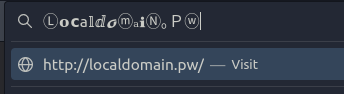

Introduction
From the internet's invention up to 2019, the number of its users rose, and the internet has connected 4 billion users worldwide.
But with the rise of the internet's popularity comes the imminent rise of web attacks as well. Web attacks or cyber-attacks are actions where an attacker takes advantage of the system vulnerabilities to gain unauthorized access. Some web attacks target the web server itself, while some target the users of the application.
One of the attacks that target users is phishing. Phishing attacks happen when an attacker sends a malicious message to a user to trick him into revealing his sensitive information (such as personally identifiable information, banking details, and passwords) to the attacker. When phishing attacks are combined with other web vulnerabilities such as open redirect and reverse tabnabbing, it ensures a higher success rate for the attacker. In the past year, an increase of nearly 100% for phishing attacks happened, which poses a risk to many industries.
Web developers own a role in decreasing phishing attacks because developers can secure their code against phishing and phishing-related attacks. They can secure their websites by providing proper URL validation, safeguarding against tabnabbing attacks, and securing from open redirect vulnerabilities.
This course will provide deep insight about phishing and phishing-related attacks and provide a guide on how a developer can secure his site from the said attacks by creating his own URL validation library. This course is essential because how hard can URLs be
